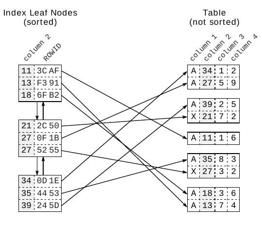

Chương 1
Giải phẫu một Index
“Index làm query nhanh” là lời giải thích cơ bản nhất về index mà tôi từng thấy. Câu này mô tả rất tốt khía cạnh quan trọng nhất của index, nhưng đáng tiếc là chưa đủ cho cuốn sách này. Chương này sẽ mô tả cấu trúc index kỹ hơn, bớt hời hợt hơn, nhưng không đi quá sâu vào chi tiết — chỉ vừa đủ để bạn hiểu các khía cạnh SQL performance được bàn đến xuyên suốt cuốn sách.
Index là một cấu trúc riêng biệt trong database, được tạo bằng create index statement. Index cần disk space riêng và chứa một bản sao của phần dữ liệu table được index. Tức là index hoàn toàn là dữ liệu dư thừa. Tạo index không làm thay đổi dữ liệu table; thao tác này chỉ tạo ra một data structure mới tham chiếu tới table. Suy cho cùng, database index rất giống index ở cuối một cuốn sách: nó chiếm chỗ riêng, dư thừa rất nhiều và tham chiếu tới thông tin thật được lưu ở một nơi khác.
Tìm kiếm trong database index giống tìm kiếm trong danh bạ điện thoại in sẵn. Khái niệm cốt lõi là mọi entry được sắp xếp theo một thứ tự xác định. Tìm dữ liệu trong một data set đã được sắp xếp thì nhanh và dễ, vì thứ tự sắp xếp quyết định vị trí của từng entry.
Tuy nhiên, database index phức tạp hơn danh bạ in sẵn vì index liên tục thay đổi. Không thể cập nhật danh bạ in sẵn sau mỗi thay đổi, đơn giản vì giữa các entry hiện có không còn chỗ trống để thêm entry mới. Danh bạ in sẵn né vấn đề này bằng cách chỉ xử lý các thay đổi tích lũy ở lần in tiếp theo. SQL database không thể chờ lâu như vậy. Database phải xử lý ngay các statement insert, delete và update, đồng thời vẫn giữ thứ tự của index mà không phải di chuyển lượng lớn dữ liệu.
Để giải quyết thách thức này, database kết hợp hai data structure: doubly linked list và search tree. Hai cấu trúc này giải thích phần lớn đặc tính performance của database.
Các Leaf Node của Index#
Mục đích chính của index là biểu diễn dữ liệu được index theo một thứ tự xác định. Tuy nhiên, không thể lưu dữ liệu này một cách tuần tự, vì khi đó mỗi insert statement sẽ phải dời các entry phía sau để lấy chỗ cho entry mới. Việc di chuyển lượng lớn dữ liệu rất tốn thời gian, nên insert statement sẽ rất chậm. Giải pháp là thiết lập một thứ tự logic, độc lập với thứ tự vật lý trong memory.
Thứ tự logic này được thiết lập bằng doubly linked list. Mỗi node có link tới hai entry lân cận, rất giống một sợi xích. Một node mới được chèn vào giữa hai node hiện có bằng cách cập nhật link của hai node này để chúng trỏ tới node mới. Vị trí vật lý của node mới không quan trọng, vì doubly linked list đã duy trì thứ tự logic.
Data structure này được gọi là doubly linked list vì mỗi node trỏ tới cả node đứng trước lẫn node đứng sau. Cấu trúc này cho phép database đọc index theo chiều xuôi hoặc chiều ngược tùy nhu cầu. Nhờ đó, có thể chèn entry mới mà không phải di chuyển lượng lớn dữ liệu — chỉ cần thay đổi một vài pointer.
Doubly linked list cũng được dùng cho collection (container) trong nhiều ngôn ngữ lập trình.
| Ngôn ngữ lập trình | Tên |
|---|---|
| Java | java.util.LinkedList |
| .NET Framework | System.Collections.Generic.LinkedList |
| C++ | std::list |
Database dùng doubly linked list để nối các node được gọi là index leaf node. Mỗi leaf node được lưu trong một database block hoặc page, tức đơn vị lưu trữ nhỏ nhất của database. Mọi index block có cùng kích thước — thường là vài kilobyte. Database tận dụng tối đa không gian trong mỗi block, lưu càng nhiều index entry vào mỗi block càng tốt. Như vậy, thứ tự của index được duy trì ở hai cấp: giữa các index entry bên trong từng leaf node, và giữa các leaf node với nhau thông qua doubly linked list.

Hình 1.1 minh họa các index leaf node và cách chúng kết nối với dữ liệu table. Mỗi index entry gồm các column được index (key, column 2) và tham chiếu đến row tương ứng trong table (qua ROWID hoặc RID). Khác với index, dữ liệu table được lưu trong cấu trúc heap và hoàn toàn không được sắp xếp. Không có quan hệ nào giữa các row được lưu trong cùng một table block, cũng không có kết nối nào giữa các block.
Search Tree (B-Tree)#
Các index leaf node được lưu theo thứ tự tùy ý — vị trí trên disk không tương ứng với vị trí logic theo thứ tự index. Tình huống này giống như một cuốn danh bạ điện thoại bị xáo trộn các trang. Nếu bạn tìm “Smith” nhưng mở danh bạ ra ở trang “Robinson” trước, thì hoàn toàn không có gì đảm bảo Smith nằm sau Robinson. Database cần một cấu trúc thứ hai để nhanh chóng tìm entry giữa các trang bị xáo trộn: balanced search tree, gọi ngắn gọn là B-tree.

Hình 1.2 minh họa một index mẫu có 30 entry. Doubly linked list thiết lập thứ tự logic giữa các leaf node. Root node và branch node hỗ trợ tìm kiếm nhanh giữa các leaf node.
Hình tô đậm một branch node cùng các leaf node mà branch node đó tham chiếu tới. Mỗi entry của branch node ứng với giá trị lớn nhất trong leaf node tương ứng. Cụ thể, giá trị lớn nhất trong leaf node đầu tiên là 46, nên entry đầu tiên của branch node cũng là 46. Các leaf node khác cũng vậy, nên cuối cùng branch node có các giá trị 46, 53, 57 và 83. Theo cách này, một branch layer được dựng lên cho đến khi mọi leaf node đều được branch node bao phủ. Layer kế tiếp được dựng theo cách tương tự, nhưng nằm trên branch level đầu tiên. Quá trình này lặp lại cho đến khi mọi key nằm gọn trong một node duy nhất: root node. Cấu trúc này là balanced search tree vì tree depth ở mọi vị trí đều bằng nhau; khoảng cách từ root node tới leaf node ở đâu cũng như nhau.

Hình 1.3 cho thấy một phần của index để minh họa quá trình tìm key “57”. Tree traversal bắt đầu từ root node ở phía bên trái. Các entry được xử lý lần lượt theo thứ tự tăng dần, cho đến khi gặp một giá trị lớn hơn hoặc bằng (>=) search term (57). Trong hình, đó là entry 83. Database đi theo tham chiếu của entry này tới branch node tương ứng, rồi lặp lại quy trình đó cho đến khi tree traversal tới được một leaf node.
Tree traversal là operation rất hiệu quả — hiệu quả đến mức tôi gọi nó là sức mạnh thứ nhất của indexing. Tree traversal diễn ra gần như tức thì, kể cả trên data set khổng lồ. Lý do chính là tree balance, nhờ đó mọi phần tử đều được truy cập với cùng số bước; lý do thứ hai là tree depth tăng theo hàm logarit. Tức là so với số leaf node, tree depth tăng rất chậm. Các index thực tế chứa hàng triệu record có tree depth là bốn hoặc năm. Hầu như không bao giờ gặp tree depth bằng sáu. Khung “Logarithmic Scalability” giải thích điều này chi tiết hơn.
Index Chậm, Phần I#
Dù tree traversal hiệu quả như vậy, vẫn có những trường hợp index lookup không nhanh như mong đợi. Mâu thuẫn này từ lâu đã nuôi dưỡng huyền thoại về “degenerated index”. Huyền thoại này coi index rebuild là giải pháp thần kỳ. Thực ra, lý do thật sự khiến những statement đơn giản vẫn có thể chậm — ngay cả khi đã dùng index — có thể giải thích được dựa trên các phần trước.
Yếu tố đầu tiên khiến index lookup chậm là leaf node chain. Hãy xét lại việc tìm “57” ở Hình 1.3. Rõ ràng index có hai entry khớp. Chính xác hơn, có ít nhất hai entry giống nhau: leaf node tiếp theo có thể còn entry khác cho “57”. Database phải đọc leaf node tiếp theo để xem còn entry khớp nào không. Như vậy, index lookup không chỉ phải thực hiện tree traversal mà còn phải đi theo leaf node chain.
Yếu tố thứ hai khiến index lookup chậm là việc truy cập table. Chỉ riêng một leaf node cũng có thể chứa nhiều hit — thường là hàng trăm. Dữ liệu table tương ứng thường nằm rải rác trên nhiều table block (xem Hình 1.1, “Index Leaf Nodes and Corresponding Table Data”). Nghĩa là mỗi hit lại cần thêm một lần truy cập table.
Index lookup cần ba bước: (1) tree traversal; (2) đi theo leaf node chain; (3) lấy dữ liệu từ table. Tree traversal là bước duy nhất có giới hạn trên cho số block phải truy cập — chính là index depth. Hai bước còn lại có thể phải truy cập nhiều block — và chính chúng làm index lookup chậm.
Huyền thoại “index chậm” bắt nguồn từ niềm tin sai lầm rằng index lookup chỉ duyệt tree; từ đó mới nảy ra ý nghĩ rằng index chậm chắc hẳn là do tree bị “hỏng” hoặc “mất cân bằng”. Sự thật là bạn hoàn toàn có thể hỏi hầu hết database xem chúng dùng index như thế nào. Về mặt này, Oracle database khá chi tiết và có ba operation riêng biệt để mô tả một index lookup cơ bản:
INDEX UNIQUE SCANINDEX UNIQUE SCANchỉ thực hiện tree traversal. Oracle database dùng operation này khi có unique constraint bảo đảm search criteria sẽ khớp với không quá một entry.INDEX RANGE SCANINDEX RANGE SCANthực hiện tree traversal và đi theo leaf node chain để tìm mọi entry khớp. Đây là operation dự phòng khi có khả năng nhiều entry cùng khớp với search criteria.TABLE ACCESS BY INDEX ROWID- Operation
TABLE ACCESS BY INDEX ROWIDlấy row từ table. Operation này (thường) được thực hiện cho từng record khớp mà operation index scan trước đó trả về.
Điểm quan trọng là INDEX RANGE SCAN có khả năng phải đọc một phần lớn của index. Nếu mỗi row lại cần thêm một lần truy cập table, query có thể trở nên chậm dù vẫn đang dùng index.